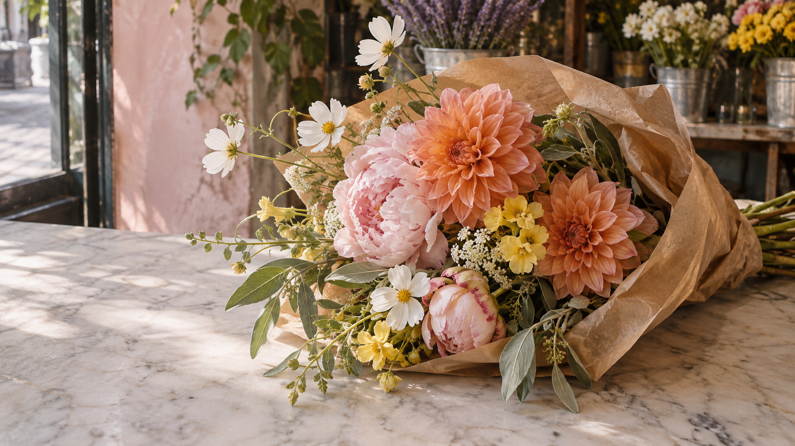
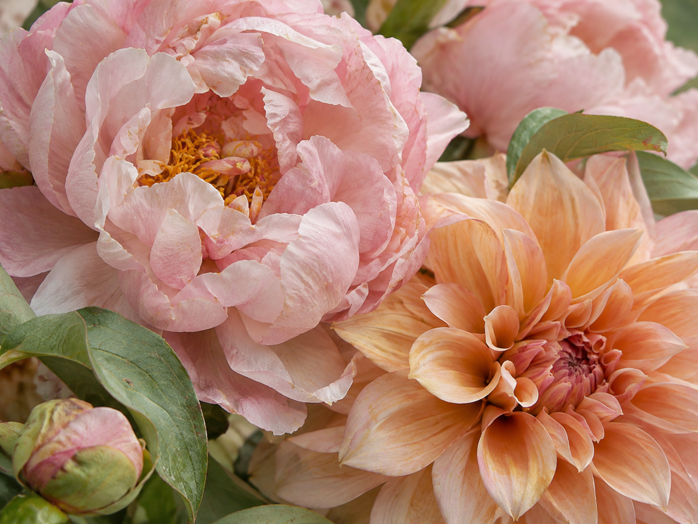
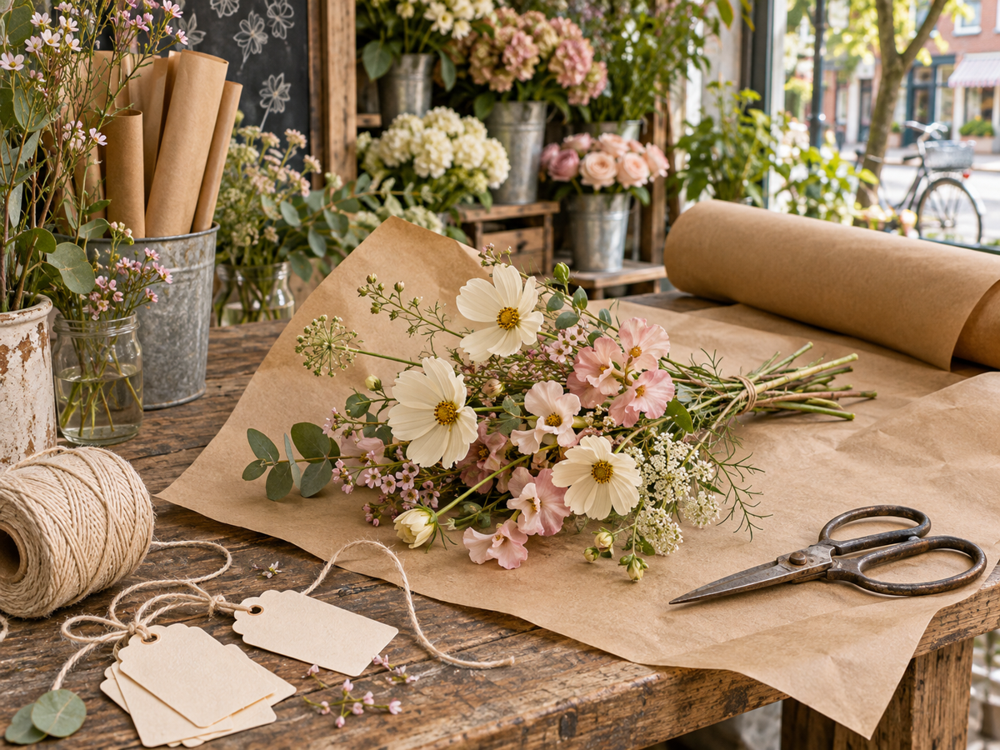
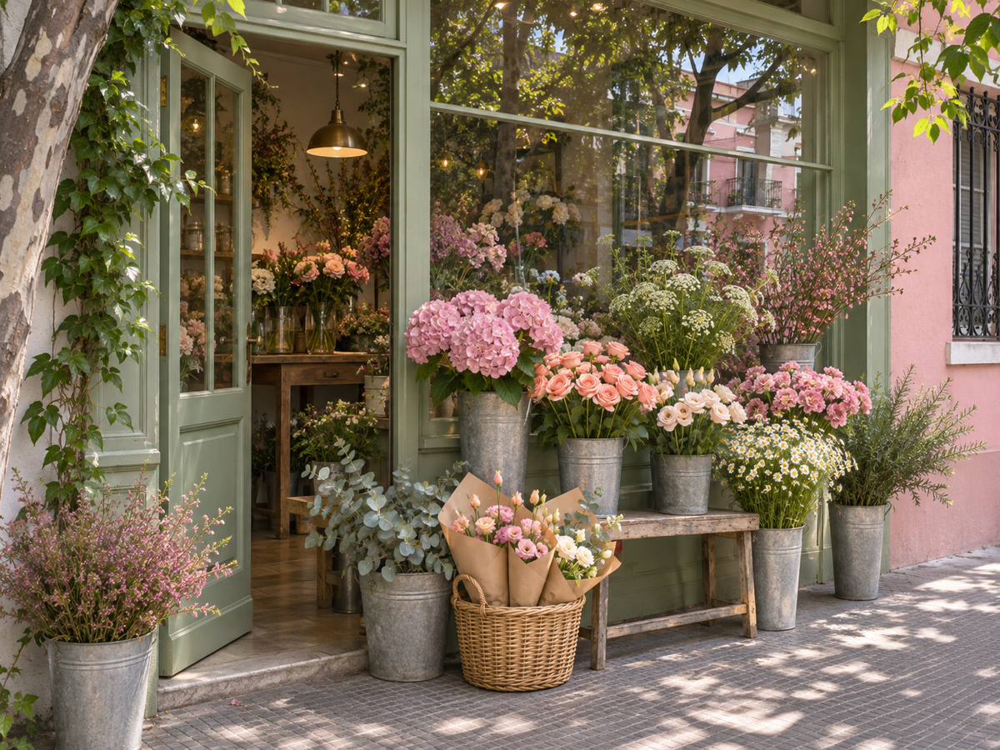

el favorito de la casa
Silvestre
↗Libre, suelto y lleno de pequeñas sorpresas. Como recién juntado del jardín.
Palermo Soho, Buenos Aires
Flores de estación, ramos un poco silvestres y ese gesto lindo de pensar en alguien.
Encontrá tu ramo ↗Para regalar. O regalarte.

Cada ramo, a su manera.FLORES CON AIRE DE BARRIOLos ramos
Nos guiamos por la estación y por lo que querés contar. Estos son algunos puntos de partida.
Libre, suelto y lleno de pequeñas sorpresas. Como recién juntado del jardín.

Tonos suaves y flores generosas. Para estar cerquita, incluso a la distancia.

porque sí también valeSimple y espontáneo. Para alegrar una mesa, un día o la vuelta a casa.
Una nota del taller: las flores y los colores cambian con la estación. Las fotos son una inspiración.
Cómo pedir
Un cumpleaños, un gracias o un porque sí. Escribinos y contanos para quién es.
Conversamos sobre colores, tamaño y flores de estación. También podés dejarnos sorprenderte.
Consultá disponibilidad, valor y opciones de entrega o retiro antes de confirmar tu pedido.
Puertas adentro
Un vistazo al mundo que imaginamos para Pétalos: luz de mañana, manos a la obra y flores por todos lados.

Siempre hay un buen motivo
Contanos tu idea. La hacemos florecer.
Escribinos por WhatsApp ↗Contacto de demostración · +54 11 5555-0303